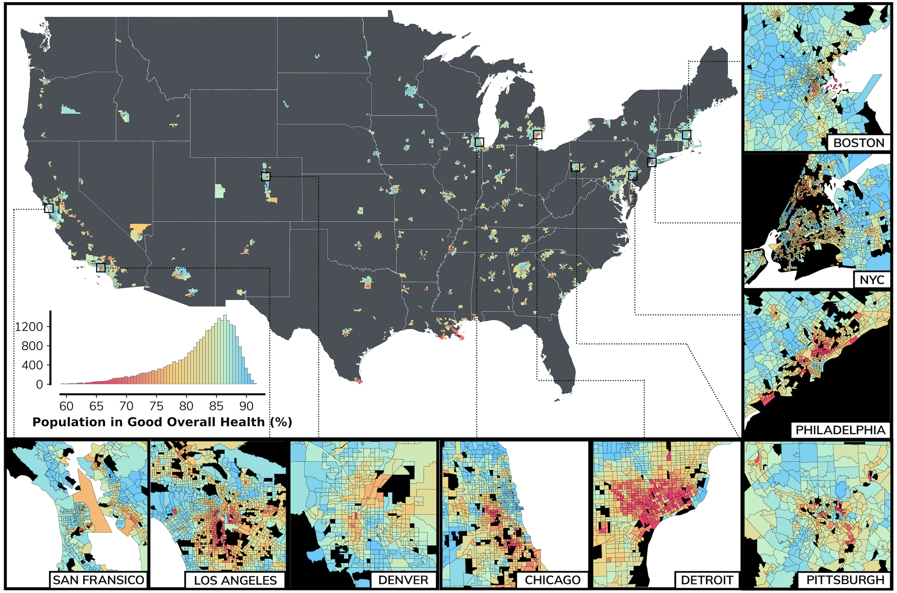
Nature Health (accepted) · 2026
Health and Urban Motifs in Cities
Investigating the effects of urban design on public health outcomes across the most populous areas within the contiguous US.
In PressLeveraging graph intelligence and systems thinking to shape sustainable and healthy urban futures.
Ezra Systems Postdoctoral Associate at Cornell University, mentored by Prof. Oliver Gao.
PhD in Urban Analytics at the NUS Urban Analytics Lab supervised by Prof. Filip Biljecki.
MIT Senseable City Lab (Boston)
MAP IV, Inc. (Nagoya)
UTokyo Deguchi Lab (Tokyo)
Urbanity: a Python package for computation of multidimensional urban networks and graphs of cities.
Global repository of urban graphs — drawn from "Global Feature-Rich Network Dataset" (Yap & Biljecki, 2023). Arcs trace research collaborations between Singapore, New York and London and the rest of the world.

Investigating the effects of urban design on public health outcomes across the most populous areas within the contiguous US.
In Press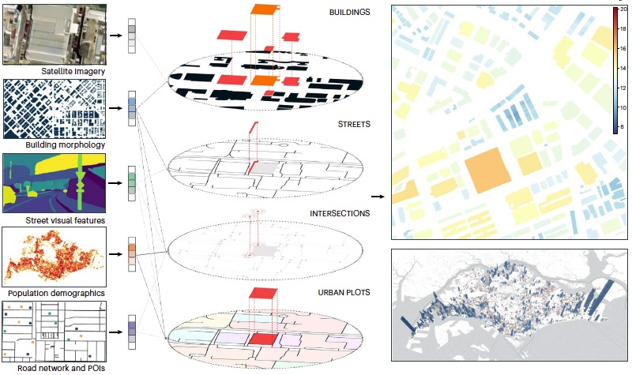
Democratising built-environment emissions at building resolution across multiple cities with open science and graph deep learning.
Read paper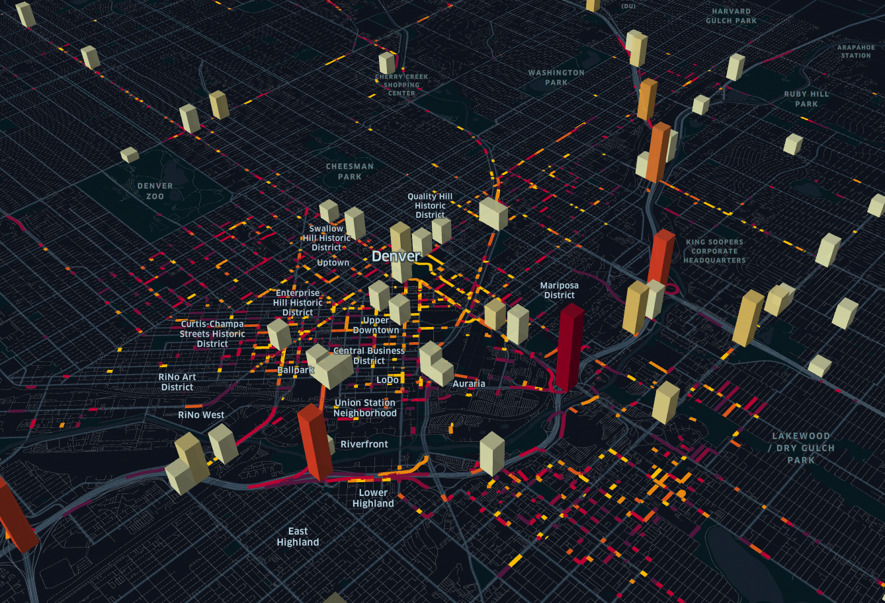
An open Python package to compute contextual and semantic spatial attributes of urban networks at any geographic location and scale.
Read paper
A high-resolution network dataset and interactive dashboard for 50 global cities — the basis of the Atlas above.
Read paper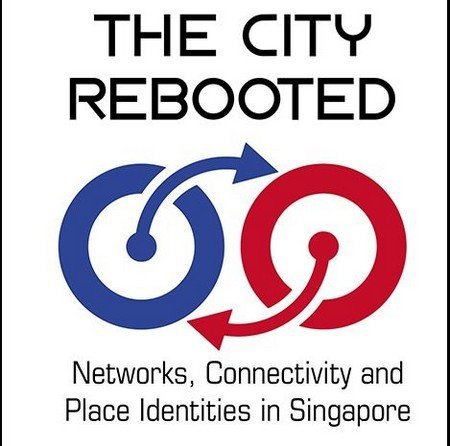
Five decades of delivering affordable, adequate public housing in Singapore.
Read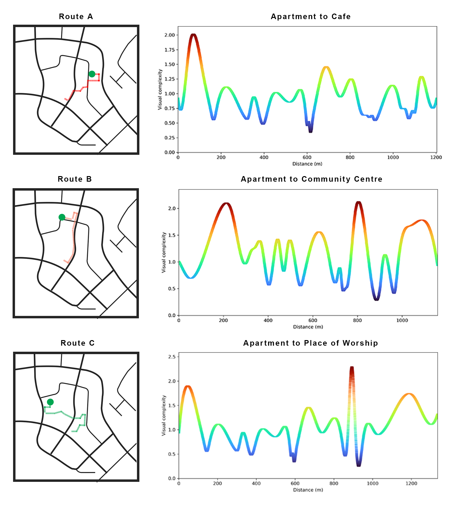
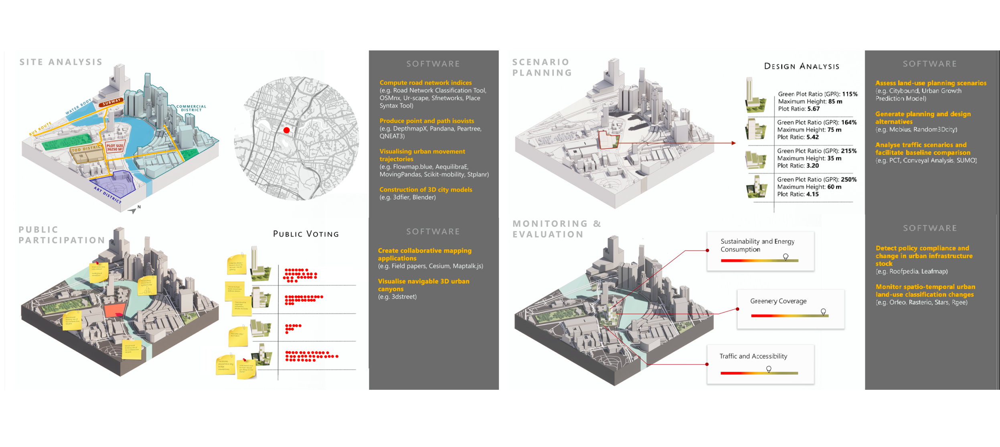
A state-of-the-art review of open-source analytical software supporting urban planners — 124 packages mapped.
Read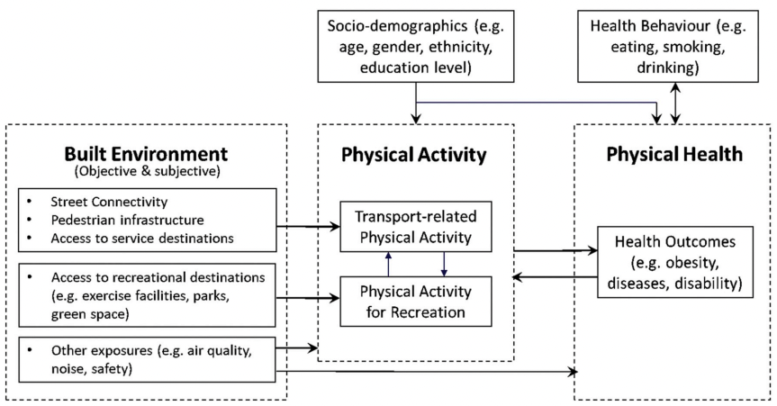
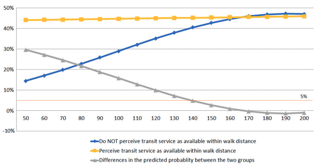
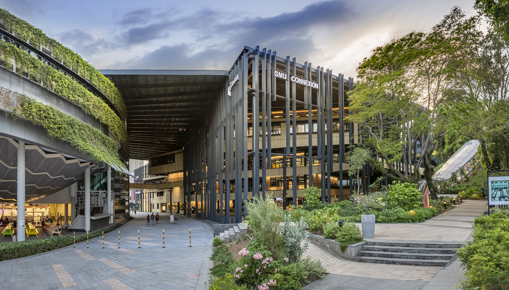
Awarded the SMU OPF which provides an opportunity to engage in advanced training and/or research at an overseas university for one year.
Presenting latest developments in open data and open-source tools for urban analytics.

Presenting applications of graph machine learning to understand urban structure and health.
Awarded the Ezra Systems fellowship supporting interdisciplinary methods for integrated urban-health systems.
Latest tools and applications of urban graphs for computational planning and sustainable development.
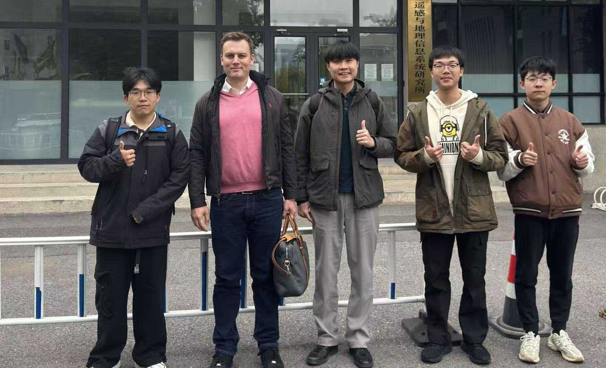
Discussion on urban analytics and GeoAI with Prof. Zhang Fan's group at IRSGIS.
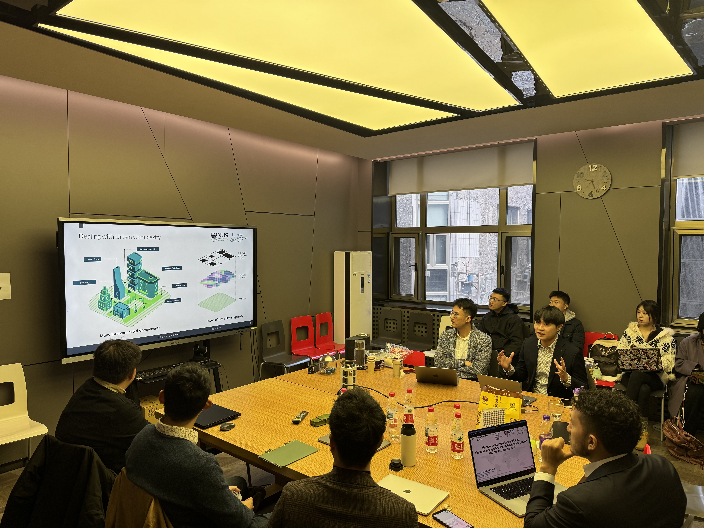
Joint seminar on urban analytics and sustainable development between NUS & Tsinghua's Schools of Architecture.
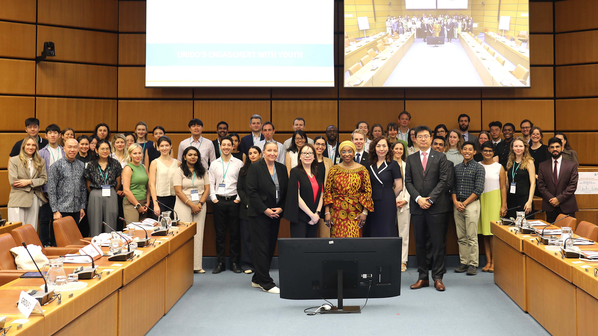
50 young urban leaders worldwide developed creative, pragmatic strategies for pressing urban demands.
A platform for city leaders to share their best practices on the urban agenda.
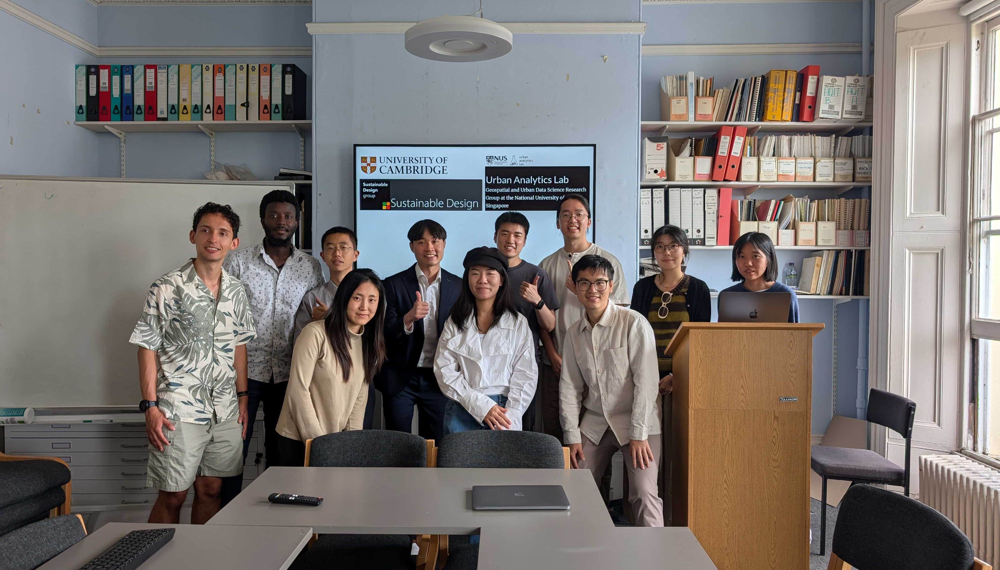
Cross-group seminars on decarbonisation, planetary health and urban analytics.
Urban graphs for multi-scalar analytics that connect cities, data and citizens.
The Singapore Embassy and Singapore Global Network hosted a memorable tea reception providing a meaningful opportunity to connect, reflect, and strengthen bonds among Singaporeans abroad.
Visual A.I. algorithms for city-scale urban sensing.
Open-source deep-learning solutions for end-to-end HD-map generation from point cloud and 360° imagery.
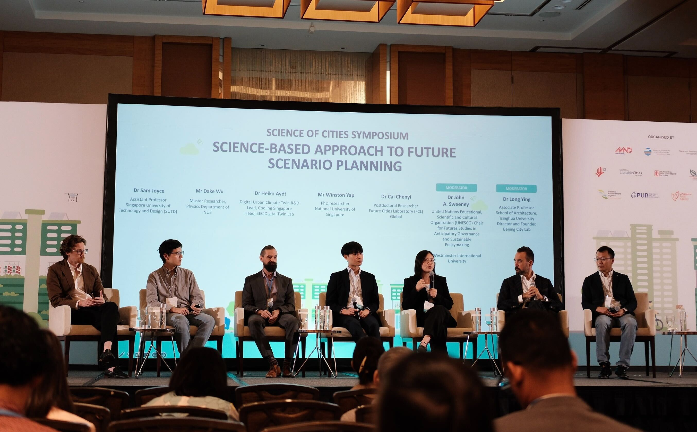
Panel on science-based approach to future scenario planning.
A network-based analytical perspective for understanding and modelling cities.
Cornell University · Ithaca, NY
NUS Urban Analytics Lab · Singapore